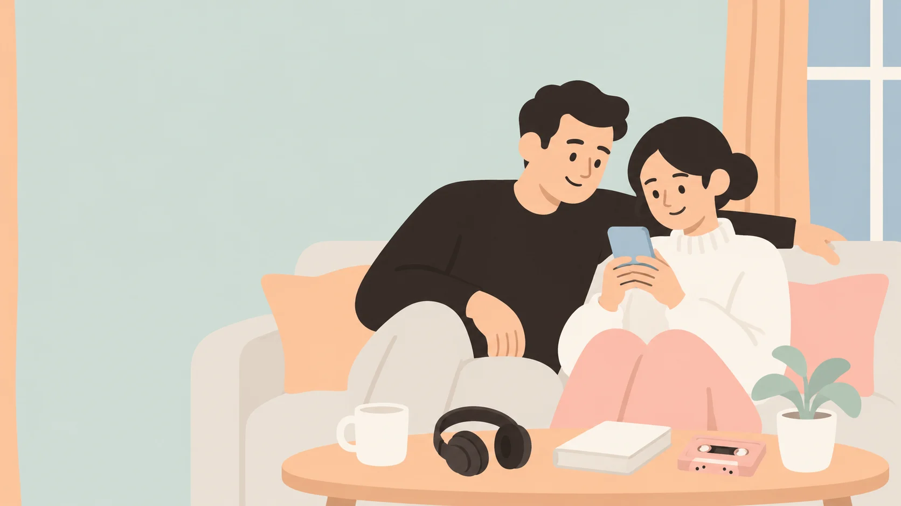
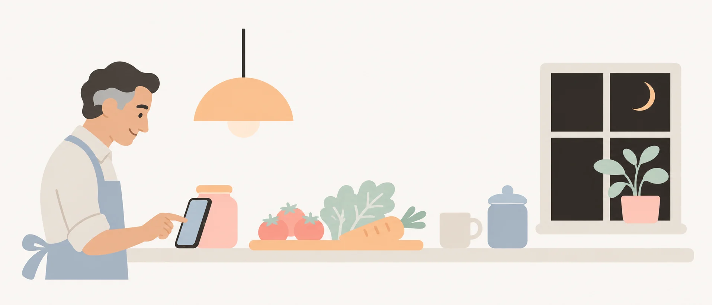
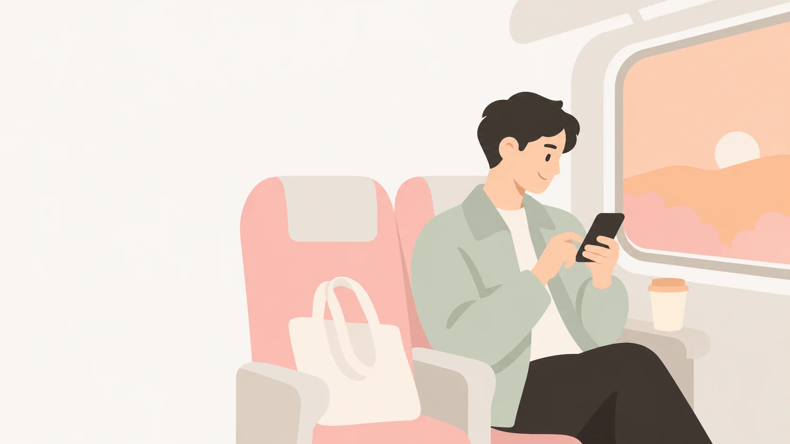
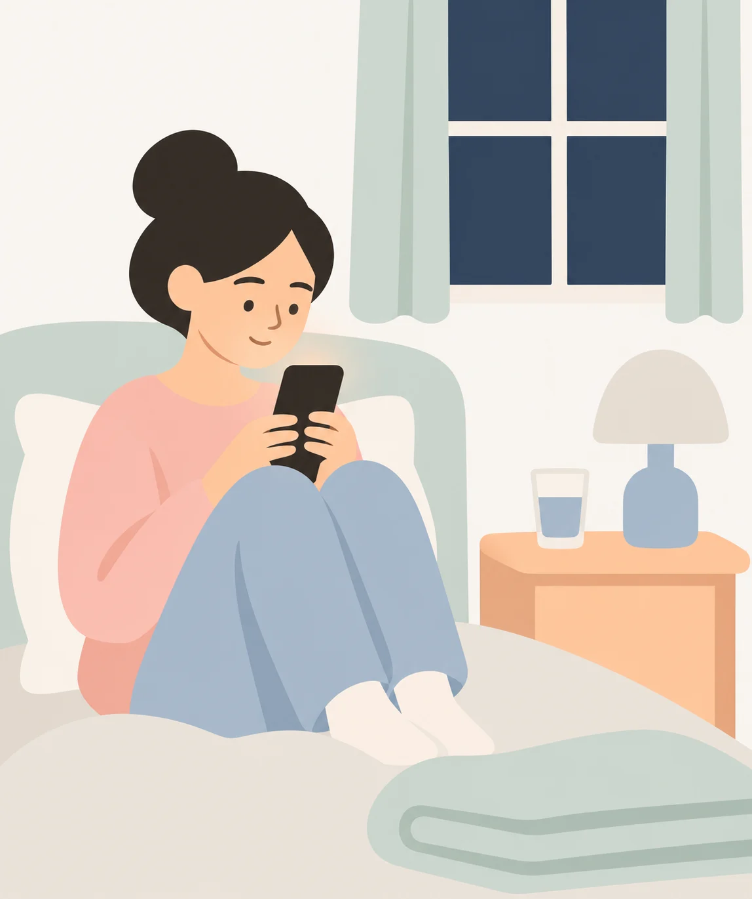

Un lugar seguro para las pequeñas cosas.
Hábitos, personas, lugares y música. En tu iPhone, sin cuenta.
El color sigue a tu estado.
En SafePlace el acento no es una marca fija: sale de cómo te sientes. Elige un estado y mira cómo cambia toda la página, igual que cambia la app.
¿Cómo te sientes?
Ahora mismo la app se ve con energía. Así funciona el tinte: un solo acento, y el resto se queda en papel.
Qué cabe en un SafePlace.
Es donde guardas lo que te sirve: una frase que te gustó, el nombre de un lugar al que quieres volver, una canción para el coche.

Tres pantallas, una idea.
Secciones y listas separadas por líneas finas. El color aparece en el detalle, nunca en el fondo.
Tu cabeza, en un mapa que se mueve.
Cada categoría es un centro y cada nota orbita a su alrededor. Los nodos crecen con lo que escribes, y el movimiento depende de cuántas notas tienes y de cómo te sientes.
- Toca un nodo para enfocarlo y leer la nota.
- Pellizca para acercar entre 0.6× y 3×, arrastra para mover.
- Puedes pausar el movimiento. Con Reduce Motion arranca quieto.

Se escribe en el momento en que pasa.
El botón de crear abre un lienzo en blanco, sin campos encajonados. Escribes, la app sugiere la categoría y el color sale de tu estado de ánimo. Después puedes cambiarlo todo, o nada.
Y si la idea viene de la app Notas de Apple, la compartes con SafePlace y decides si la guardas o la descartas.

Y cuando el día termina, se queda quieta.
Puedes activar un recordatorio diario a la hora que elijas. Si no lo abres, no pasa nada: la app no insiste ni convierte el descanso en una tarea más.
En la cama, con el brillo bajo, el tema oscuro cuida el contraste. La mascota sigue ahí, del color del día que tuviste.
Tus notas no salen de tu iPhone.
Sin cuenta, sin registro, sin servidor. La app guarda todo en el dispositivo y te deja exportarlo cuando quieras.
Instalarla toma tres pasos.
SafePlace se distribuye como build firmada por mí, no por la App Store. Por eso iOS pide un pequeño rodeo la primera vez.
- Instala LiveContainer o AltStoreSon las dos apps que permiten instalar builds fuera de la App Store en iOS.
- Agrega el feed de SafePlaceCopia la dirección de abajo y pégala como fuente nueva en LiveContainer o AltStore.
- Instala y actualizaCada push nuevo aparece como actualización. Tus datos se conservan entre versiones.
Dirección del feed
Es la misma que usa AltSource. También puedes abrir el enlace directo desde Safari en el iPhone.
https://hihirams.github.io/SafePlace-App/source.json
Requiere iOS 17 o posterior. La versión más reciente es la 1.49.
¿Y la App Store?
Todavía no. SafePlace es un proyecto personal y hoy se instala con LiveContainer o AltStore. El día que llegue a la App Store, esta página será el primer sitio en decirlo. No vas a encontrar aquí un badge que no signifique nada.
Preguntas frecuentes.
¿Necesito cuenta o suscripción?
No. No hay cuenta, no hay nube y no hay compras dentro de la app. Instalas y usas.
¿Qué pasa con mis datos si desinstalo?
Se van con la app. Por eso Ajustes incluye exportar a JSON: hazlo antes de borrarla si quieres conservar el historial.
¿Funciona en el iPad?
Sí. La app adapta el ancho de lectura y usa cuadrículas de tres o cuatro columnas en pantallas grandes.
¿Cómo llegan las notas de la app Notas de Apple?
Abres la nota, tocas Compartir, eliges SafePlace y la nota aparece en la pestaña Notas para que decidas si la guardas. iOS no permite leer Notas directamente, así que se usa la hoja de compartir.
¿Tiene modo oscuro?
Claro, oscuro y automático. En oscuro el papel se vuelve negro y el acento se mantiene, porque el color sigue siendo el mismo lenguaje.
¿Por qué no está en la App Store?
Porque es un proyecto personal que voy publicando build por build. La distribución por LiveContainer permite actualizar sin depender de una revisión.